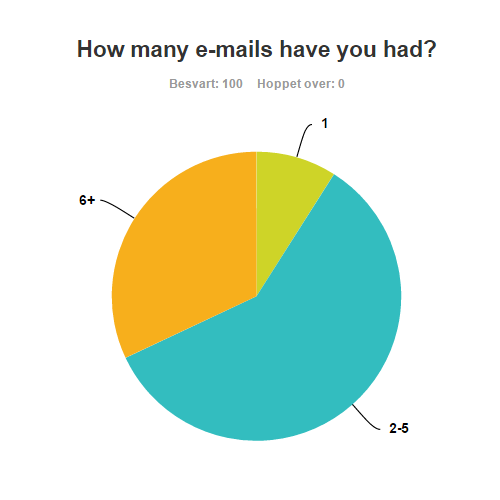

The Problem
Everything technological that is too time consuming is a problem from a technological perspective.
Especially if we could get the work done in minutes. Lets look at these kinds of problems. But first, let
us ask you some questions. Are you aware of all the services that are connected to your email address?
Have you always had the same email address ever since you created one? You would probably answer
“no†to at least one of the questions above. Then you would probably have experienced problems with
unwanted emails or problems with changing to new email address without knowing the important
services that has your old email address. Let's look at what people say about this
Our Research
We made a survey consisting of six questions. The survey was conducted in november 2016 among 100
email users from different age groups all around the world. The users were informed about that this
survey is only being used to this final project. We will use the results of the survey to show the

Here we can see that 6% of the users were from age 12-18, 38% of user were from age 19-40,
39% of the users were from age 41-55 and 6% from age 56+.

This diagram shows that over 90% of the people didnt't have the same email address ever since
they created one.

This diagram shows that over 90% of the people aren't aware of all the services connected to their
email address.

This diagram shows that over 70% of the people think that their unawareness of the places their email
is registered to is a big problem.

his diagram shows that over 70% of the users would have used the application we will be describing as
our solution for the problems we will be adressing now.
This diagram shows how our users handle unwanted emails. The majority of the users delete it, ignore
it or try to unsubscribe from the sender.
The First Problem
The first problem: Unwanted emails. How do you handle unwanted emails? You can try to manually go
and unsubscribe from every sender of the unwanted emails, delete every time you get an unwanted
email, ignore every time you get an unwanted email, set up filters or report the unwanted email as
spam. Let’s look at how our email users handle this problem.
These methods to prevent unwanted emails are too time consuming or annoying. From a technological
perspective, this is a problem. How can we possibly prevent this time consuming work with unwanted
emails? The answer is “e-Tracker”. We will tell you about it later. But first, let us address the second
problem.
The Second Problem
The first time you created an email address, you probably wouldn’t have thought of using it for
professional inquiries. So, your first email address would have been something like sexyboy97@live.no,
barbie23@gmail.com, kittygirl@yahoo.com or kingofoslo@hotmail.com. And now you want your email
address to be more professional. So, you create a new email address. Or you just have another good
reason to change your email address, so you create a new one. Here you can see how many of our
email users that have changed their email addresses. Which is over 90% as said earlier.
But you have your previous email address registered to so many services that you don’t have any
overview over the important ones. So, you must manually go and find the important services and send
an email about your new email address. This is also time consuming which is also a problem from a
technological perspective. And as said over 70% of our survey answerers think this is a big problem too.
How can we possibly prevent this time-consuming work forever? The answer for this one is e-Tracker
too. What is this e-Tracker? The e-Tracker is a web-based application and our solution for the
problems we adressed. You can read about our solution by clicking "Solution" in the navigation bar or
you can click here.